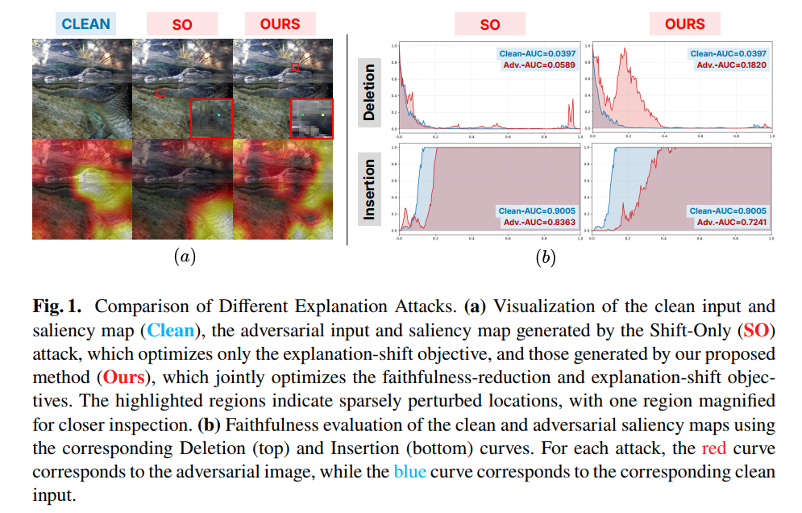
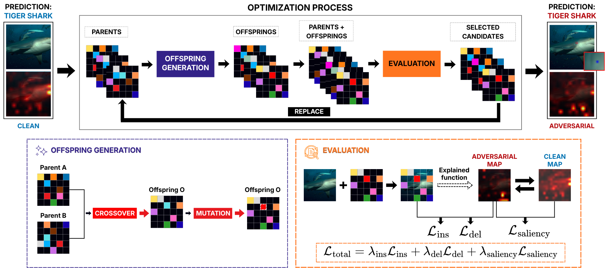
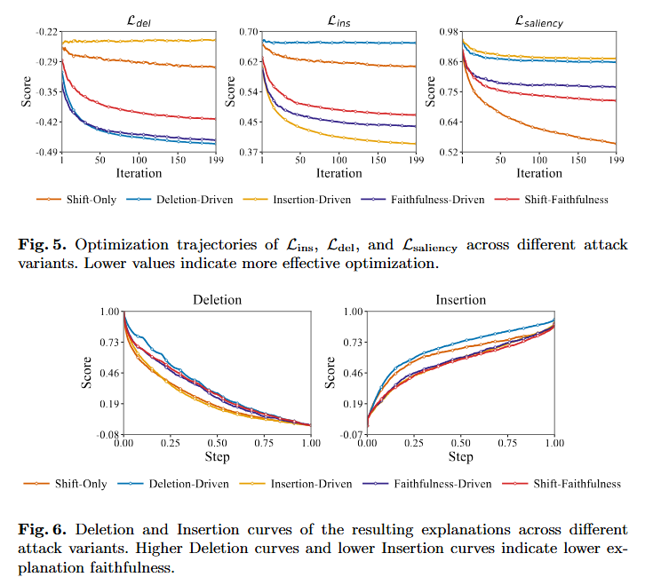
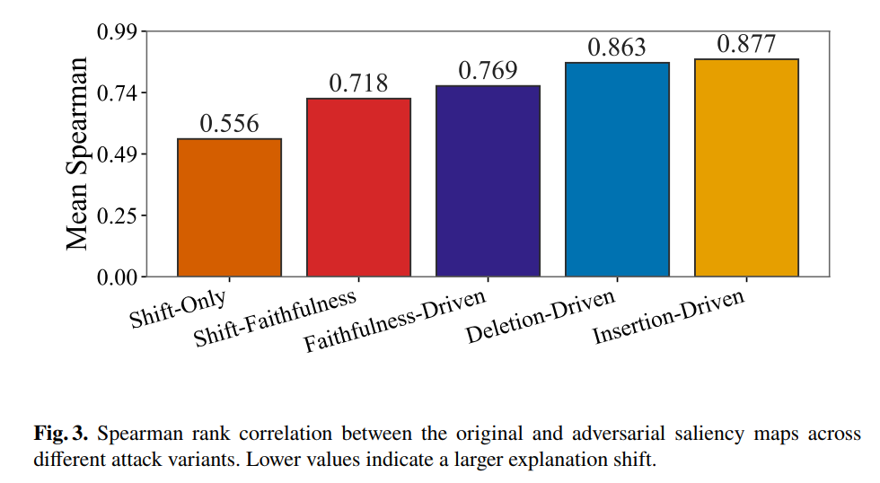
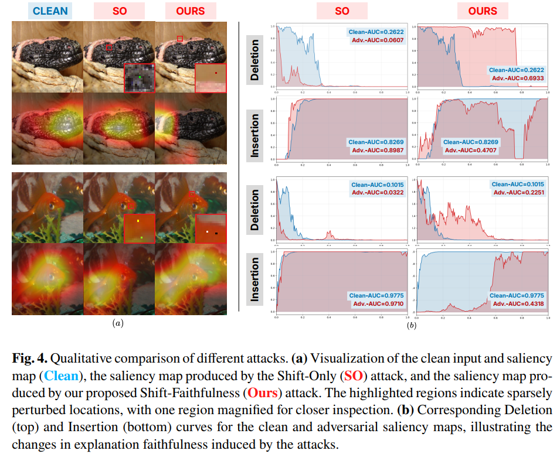
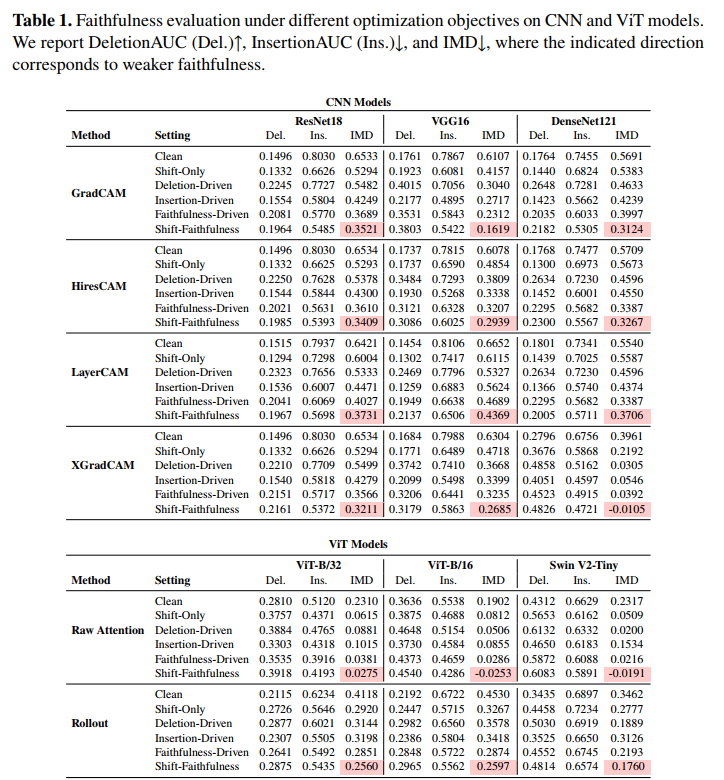

Insertion and deletion
Smooth surrogates approximate the faithfulness tests and guide the search toward explanations that provide weaker evidence for the predicted class.
Accepted at MMM 2027
1 University of Information Technology, Ho Chi Minh City, Vietnam
2 Vietnam National University, Ho Chi Minh City, Vietnam

Visual explanations can be manipulated without changing a model's prediction. But a shifted saliency map may still point to evidence the model actually uses, so explanation shift alone does not guarantee reduced faithfulness.
This work introduces a sparse, prediction-preserving attack that jointly shifts saliency maps and weakens their faithfulness. A gradient-free genetic algorithm searches for perturbations affecting at most 0.1% of image pixels. Experiments across six vision models and six explanation methods show that a small pixel budget can both redirect saliency toward less relevant regions and substantially degrade explanation faithfulness.

Given an image \(x\), a classifier \(f\), and its original predicted class \(\hat{y}\), we seek a sparse perturbation \(\delta\). The resulting image is \(x_{\mathrm{adv}}=\operatorname{clip}(x+\delta,0,1)\), and \(\phi^x\) and \(\phi^{x_{\mathrm{adv}}}\) denote the saliency maps for the clean and perturbed images, respectively. We want to reduce the faithfulness of the adversarial explanation and shift it away from the original map, while changing no more than \(\epsilon\) pixel locations and preserving the original prediction:
Minimizing the first term lowers insertion AUC and raises deletion AUC, indicating weaker faithfulness; minimizing Spearman correlation encourages a larger change in saliency ranking.
These evaluation metrics rely on ranked regions and provide coarse signals for a genetic search. We therefore use smoother surrogate losses for insertion and deletion, together with a Jaccard-based saliency-overlap loss. Their weighted sum gives the objective evaluated for each candidate perturbation.
Smooth surrogates approximate the faithfulness tests and guide the search toward explanations that provide weaker evidence for the predicted class.
A Jaccard-overlap loss encourages the adversarial saliency map to differ from the clean map.
\[ \min_{\delta}\quad \mathcal{L}_{\mathrm{total}} = \lambda_{\mathrm{ins}}\mathcal{L}_{\mathrm{ins}} + \lambda_{\mathrm{del}}\mathcal{L}_{\mathrm{del}} + \lambda_{\mathrm{sal}}\mathcal{L}_{\mathrm{sal}} \] \[ \text{subject to}\quad \|\delta\|_{0,\mathrm{pixels}} \leq \epsilon, \qquad \arg\max f(x_{\mathrm{adv}}) = \hat{y}, \qquad x_{\mathrm{adv}} = \operatorname{clip}(x+\delta, 0, 1). \]
Here, \(\mathcal{L}_{\mathrm{ins}}\) and \(\mathcal{L}_{\mathrm{del}}\) are smooth insertion and deletion surrogates, while \(\mathcal{L}_{\mathrm{sal}}\) is the Jaccard overlap between the clean and adversarial saliency maps. Each weight \(\lambda\in\{0,1\}\) switches its objective off or on. The Shift-Faithfulness attack uses \((\lambda_{\mathrm{ins}},\lambda_{\mathrm{del}},\lambda_{\mathrm{sal}})=(1,1,1)\). The other variants are Deletion-Driven \((0,1,0)\), Insertion-Driven \((1,0,0)\), Faithfulness-Driven \((1,1,0)\), and Shift-Only \((0,0,1)\).
Compared with a shift-only attack, jointly optimizing both goals can produce explanations that are not only different, but also less faithful to the model's prediction.




@inproceedings{khoatn-mmm2027,
title = {Few Pixels, Fragile Faithfulness: Evaluating Visual Explanations under Sparse Perturbations},
author = {Khoa Tran, Viet-Hang Duong, Ngoc Hoang Luong},
booktitle = {International Conference on Multimedia Modeling (MM)},
year = {2027},
publisher = {Springer}
}@inproceedings{sparse_saliency,
title = {On the Instability of Saliency Maps under Sparse Perturbations},
author = {Khoa Tran and Thai Huy Nguyen and Quan Minh Phan and Khang Tran and Viet-Hang Duong and Tien-Dung Mai and Ngoc Hoang Luong},
booktitle = {Proceedings of the 2026 International Conference on Multimedia Analysis and Pattern Recognition (MAPR)},
year = {2026},
publisher = {IEEE}
}